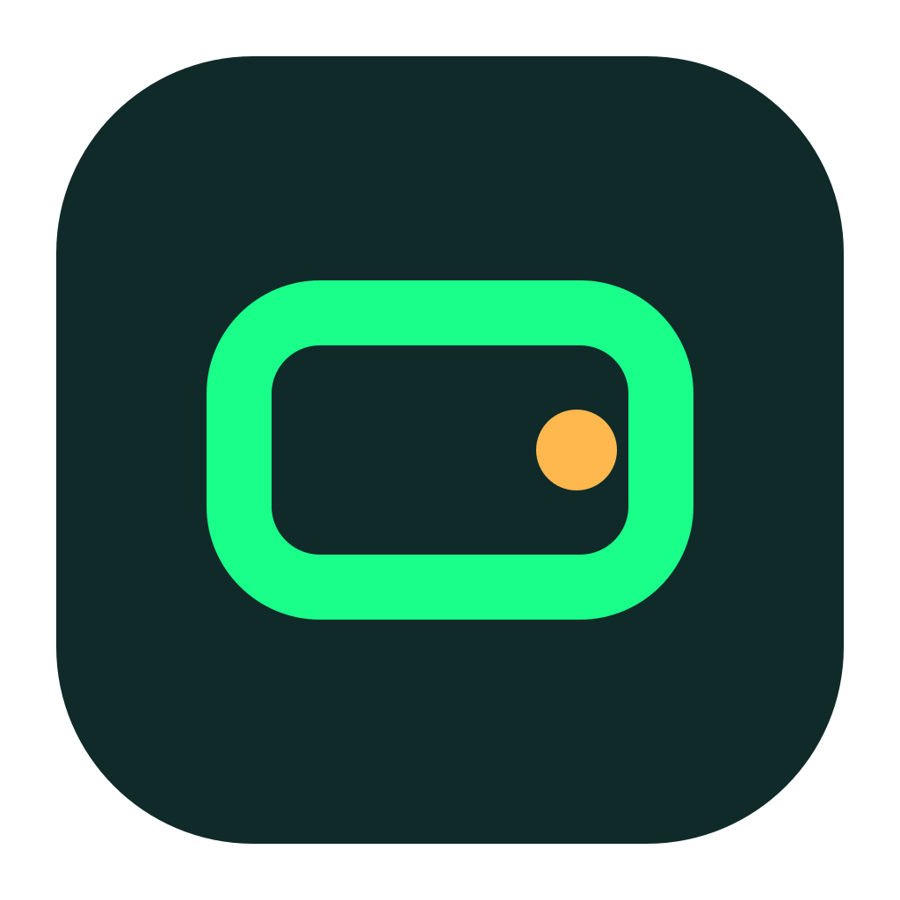
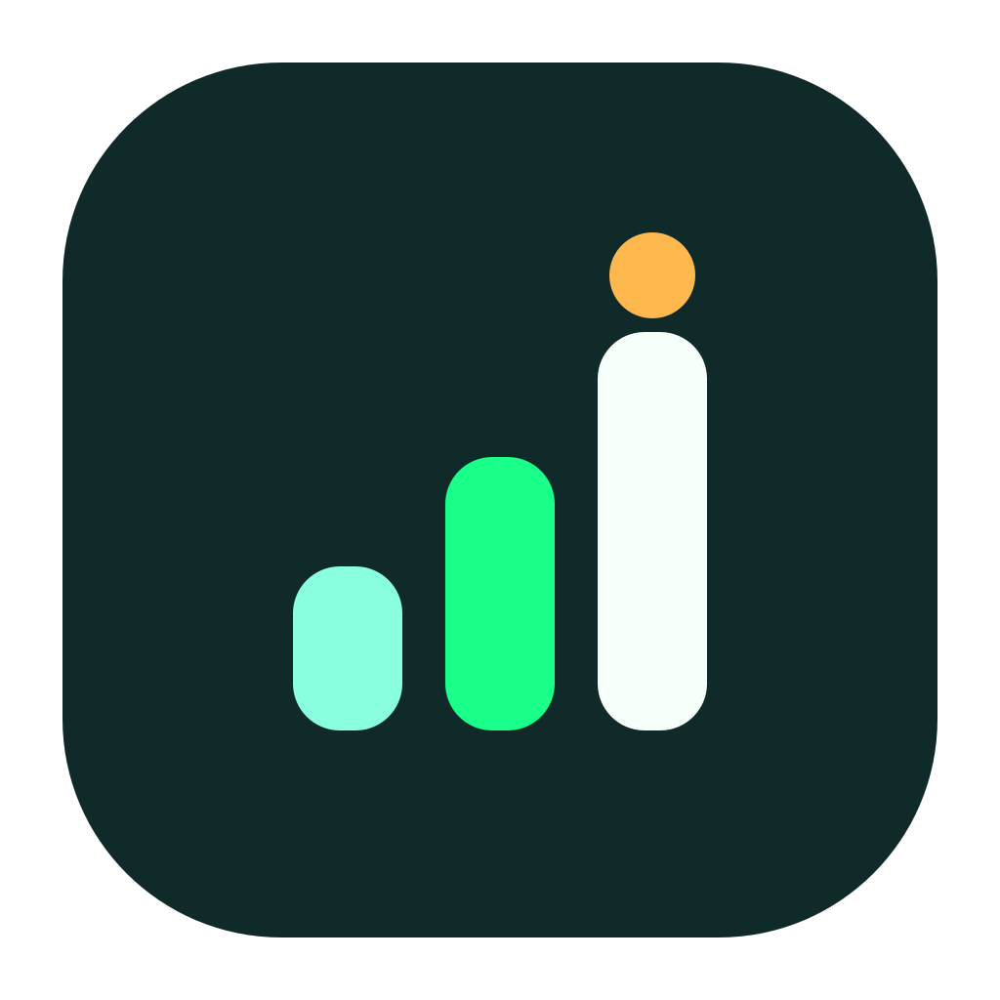
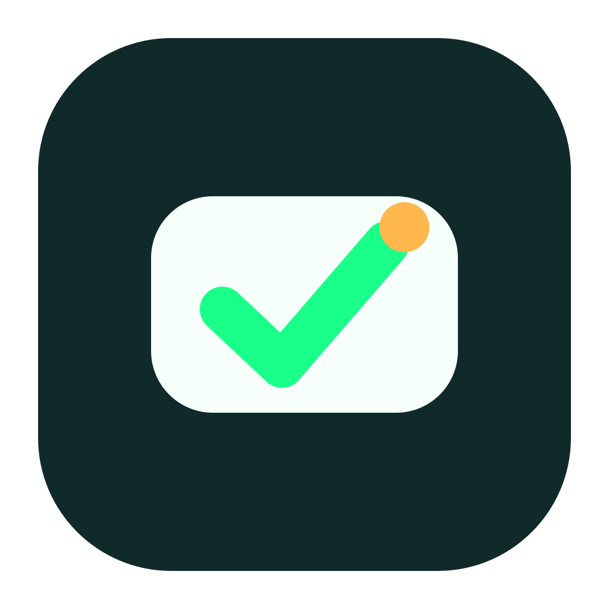
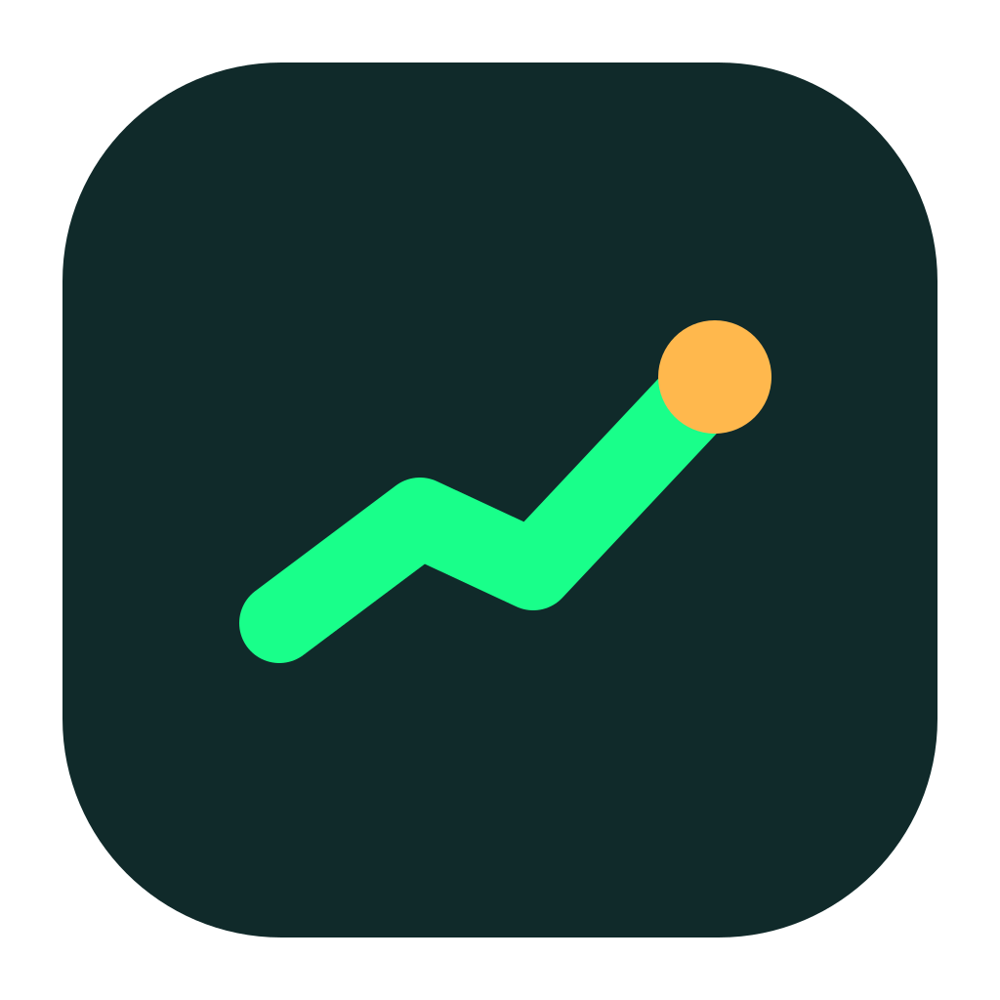

Zenifi - logo v6 minimal
Prostsze kierunki po odrzuceniu zbyt zlozonych wariantow. Zostaje paleta Neon Mint, ale znak ma miec mniej elementow i dzialac w realnej ikonie aplikacji.
Zasada v6
Maksymalnie jeden glowny symbol, jeden akcent i grube, czytelne ksztalty. Bez detali nachodzacych na siebie i bez kilku historii w jednej ikonie.


